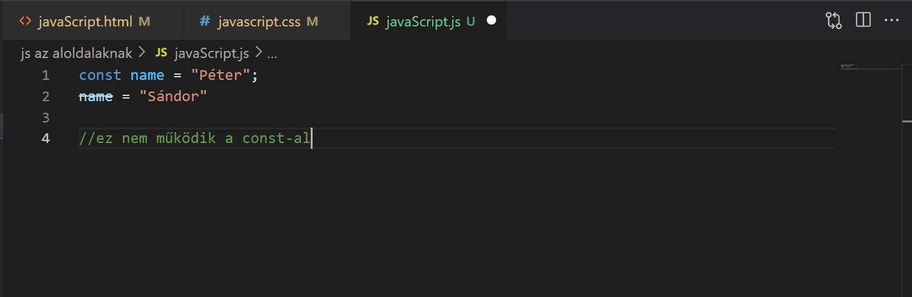

A javaScript
Teljesen fölösleges fogalmakat írni ide, majd jönnek a dolgok.Max annyi, hogy ezen az oldalon csak a legalapabb fogalmak lesznek. A fogalmaknak amúgy angolul és magyarul is itt lesznek. A js fáljban lesz mindenre a példa, de majd ide is bekerülnek a képek.
Variables (változók)
Az adatok tárolására szolgálnak (deklarálunk).
var (declare/deklaráló) szín (variable/változó) = piros (value/érték)
Kijelentjü (var), hogy a szín (változó)-nek az értéke (value) piros. (Kis infó: A programozási nyelvekben a változó úgy képzelhető el, mint egy hely, ami alkalmas egy érték tárolására a számítógé memóriájában. Amúgy nem kötelező értéket adni nekik.) A dot operátorral sok dolgot lehet velük csinálni, pl. megváltoztatni a típusukat, lekérni a hosszúkat, de ezt majd később látni fogjuk. Három fajta van: var, let, const. Soha ne használjuk a var-t, mert bonyodalmak lehetnek, arra pedig rábaszunk.
Let
A let értéke változtatható:
A let nem újradekrarálható (redeclared), a chrome itt pl szemét, mert azt mondja, hogy de, viszont mozzilában ez már hiba:
Ezen kívül Block Scope-os. Tehát azok a változók, amikor a {}-on belül vannak nem láthatóak a {}-on kívül. A "var"-ra ez nem igaz, azért is cumi használni.
De itt egy remek példa, ami meg is mutatja a Block Scope működését:
Amúgy meg, a "let" ugyanabban a blockban nem változtatható meg, de ha már egy {}-ben variálunk, akkor vehet fel már értéket (value).
Const
A const nem változtatható (reassigned):
Itt is igaz, hogy nem újradeklarálható (redeclared).
Az interneten azt írták, hogy általános szabály, hogy mindig "const"-al dekraláljunk, kivéve ha tudjuk, hogy az érték meg fog változni.
Használjunk "const"-ot új sornál (array)-nál, objektumnál (object), funkciónál (function), "regExp"-nél.
Kicsit trükkös a "const", mivel nem egy állandó értéket határoz meg, hanem egy állandó hivatkozást határoz meg egy értékre. Tehát nem rendelhetek hozzá új értéket (value), sort (array), vagy objektumot (object) a változóhoz (variable), VISZONT megváltoztathatom a sor (array) elemeit (elements) és az objektum (object) tulajdonságait (propeties).
Íme a sor elemeinek változatására egy példa:
Itt pedig egy példa arra, hogy az objektum (object) tuladjonságát (property) is lehet változtatni:
Ezen kívül ez is Block Scope-os. Tehát azok a változók, amikor a {}-on (block) belül vannak nem láthatóak a {}- on (block) kívül.
Végül egy apróság: szeretik nagybetűvel írni a változóját.
Típusok (types) és Operátorok (operators)
Minden változónak (variable) van egy típusa (type). A változó (variable) típusa (type) lehet szám (number), betű (string), Boolean, ami az igaznak (true) és a hamisnak (false) az értéke, null és undefined, valamint Objektumok és szimbólumok (Object és Symbols). Ezeket ráadásul tudjuk konvertálni, tehát át tudjuk az egyiket a másikká alakítani.
A változó (variable) értéket a "typeof"-al tudjuk megnézni.
Szám (number) operátorai
Számos dolgot lehet csinálni a számokkal.
Például át lehet alakítani betűvé (string):
Lehet matemaikai műveleteket is végezni velük:
Lehet többszörös variánsokat (multiple variants) is lehet csinálni:

Növekmény operátort (increment operator) lehet csinálni:
A javaScript a matekot is ismeri:
Az operátor precedenseket (operator prevedens) itt lehet lelesni:
Lehet pontosítani (precision) a számokat, és a negatívokkal is boldogul:
Itt egy apróság megint. Ha használjuk a tizedesjegyeknél a ".toFixed()"-et, tehát megírjuk, hogy hanyadik számmal foglalkozzon még, akkor az eredmény string lesz.
Ne keverjem amúgy majd össze a ".toPrecision()"-nal, ami a számokat nézi, nem a tizedesjegyet.
String (betűk) operátorai
A betűket (string) " "-ek közé rakjuk, a backslash-el pedig idézőjelbe tudjuk rakni a szövegrészletet, ha akarjuk.
Mellesleg ez hasznos lehet, ha arra vagyunk kíváncsiak, hogy mit lehet még csinálni vele:
A szövegbe beágyazni is tudunk (embed).
A betűket (string) manipulálni is lehet, akár a számokat. Össze lehet kötni őket, de akár kisbetűkre vagy nagybetűkore is lehet állítani őket.
De amit a leggyakrabban használnak az a ".length" tulajdonság (property), ami megmutatja a karakterek számát.
Nem jó, ha szivatja magát az ember, ezért észben kell tartani az idézőjeles szabály, szóval, ha valami idézőjelben van, az mindenkép betű (string)
.Még néhány szó a metódusokról, mert fontos.
Van pár fontosabb, például a .trim(), ami a felesleges szóközöket vágja le a "string"-ről
Ott a .concat(), ami új karaktereket fűz hozzá a meglévő Stringhez, azt, ami a zárójelben van.
A toLowerCase() segítségével az egész kisbetű lesz.
A toUpperCase() pedig nagybetűvé tesz mindent.
De még az is fontos, hogy módosítani és keresni is tudunk a stringben.
Az .indexOf() megkeresi a Stringen belül egy adott szövegrész kezdetét.
A .replace() kicseréli a megadott szövegrészt a Stringen belül. Ennek a metódusnak kettő darab úgynevezett paramétere van, tehát két adatot kell a zárójelek között megadni, először azt, amit cserélni akarunk, majd azt, amire cserélni akarjuk.
Számok (numbers) és a betűk (string) kombinálása
Végül a kettőnek a kombinálásáról néhány operátor (operators). Megesehet ugyanis, hogy azt akarjuk, hogy egy számsor inkább betűként (string) működjön, vagy betű (string) számként (number).
Annyit még érdemes itt megjegyezni, ha feltűnik a NaN, akkor az annyit jelent, hogy nem szám az érték (not a number).
Boolean Variables
A false és a true értékekkel (value) mahinál.

Null és undefined
Ha a változónak (variable) nem adunk meg értéket (value), akkor undefined (definiálatlan) lesz.
Ha megadjuk a null értéket, akkor a nem történik semmi, a consolon pedig megkapjuk a "null"-t.
Tehát ezek segítségével lehet megállapítani, hogy nem adtam értéket valaminek, vagy adtam, de azt direkt én állítottam 0-ra, tehát kiürítettem, akkor az "null".
Végül néhány fontosabb logikai operátor:
< – kisebb,
> – nagyobb,
<= – kisebb vagy egyenlő,
>= – nagyobb vagy egyenlő,
== – megegyező érték,
=== – megegyező érték és típus,
!= – nem megegyező érték,
!== – nem megegyező érték és típus,
! – tagadás – logikai érték megfordítása,
&& – és,
|| – vagy
Objektum (object)
Csak említésképpen rakom ide, később lesz róluk szó, most elég, ha tudjuk, hogy léteznek ilyenek. Itt egy példa egy Objektítvára (object):
Itt a végén apróságként megjegyzem, hogy a típusokat meg tudunk adni mi is.
Példa
Egy példán keresztül összegezzük, hogy mit tudunk már csinálni.
Itt egy sima "form" van, amibe két dolgot lehet belerakni, a terméket és a mennyiséget.
A terméket "top-input"-nak, a mennyiséget pedig "amount-input"-nak neveztem el.
Kifotózom ide, hogy mi van a javaScript.js-ben, de amúgy ott is látható, hogy mit írtam bele.
Először felvettem "let"-el egy változót, az "amountInput" nevet adtam neki, hogy a nevével is következtessek arra, hogy ez az "amount-input" nevezetű inputra mutat.
Ennek adtam egy értéket, ami a "document.querySelector("input[name='amount-input']")". a "document.querySelector"-nak megadtam, hogy mutasson rá arra az inputra, aminek a neve az, hogy "amount-input", így jött ki ez: "("input[name='amount-input']")"
Ezek után felvettem "let"-el egy price változót 1200-as értékkel: let price = 1200, majd egy amount változót "parseInt(amountInput.value) * price" értékkel. Ez annyit csinál, hogy a "parseInt"-el az "amountInput" értékét számmá alakítja, majd megszorozza a price értékével.
Persze ez még így nem jó, mert ahogy betöltődik az oldal, egyből lefut a kód, így mindig NaN lesz az eredmény. Ezért kellet neki adni valami pontot, hogy akkor fusson le, amikor mi akarjuk.
Annyit csináltam csupán, hogy beleraktam egy "funciton"-ba az egészet, mert így már ezt a funkciót hozzáadhatom valamihez, ami hatására, ha akarom lefuthat a kód, de ha akarom a console-ba is meghívhatjuk a "calcAmount()" funkciót, és lepörög a kód. Melleseleg itt a végére egy alertet raktunk még pluszba hozzá, hogy feldobja, hogy mi az ár, de ez később változik.
Most pedig legyen kicsit igényesebb ez az egész, ha már érthető a dolog úgy, hogy a javaScript segítségével módosítom a HTML elemek tartalmát.
Módosítottam kicsit a dolgokat. Létrehoztam egy extra "div"-et a button fölé, ami szeretném,hogy leváltsa majd az alert gombot (Itt gyorsan megjegyzem, hogy minden a calcAmountTwo() alatt megy, hogy ne legyen kavarodás).
Végül, ahogy látszik is, a "let showAmount = document.querySelector("span.show-amount");"-al megadtam, hogy a showAmount értéke az az element, ami az a span, aminek a "class"-a az, hogy "show-amount".
Végül a "showAmount.innerHTML = amount"-al azt tettem, hogy ami a showAmount-on belül van, annak az értéke az "amount". Azoknak a HTML elemeknek, amelyeknek van lezáró tag-je (azaz nem self-closed elemek) lehet tartalma. Az "innerHTML" tulajdonság js alól elérhető, és ki lehet vele olvasni, vagy módosítani is lehet az elemek tartalmát, azaz a bennük található HTML kódot.
Kicsit még bonyolítsuk. Itt is egyet hozzáteszek mindenhez, itt már "calcAmountThree" alatt fognak menni a dolgok.
A lényeg, hogy hozzáadtam egy szöveget, hogy "Minimum 1, maximum 10 db, plusz beállítottam a "value"-t az intputnak egyre, hogy ne csesszem el folyamatsan azzal a dolgokat, hogy elfelejetek beleírni bármit.

Ha ez megvan, akkor az "if"-el fogok operálni, mégpedig azt fogom vele csinálni, hogy ellenőrzöm, hogy bekerültek-e az infók
Az történt, hogy "let"-el hozzáadtam egy "amountNumber"-t, aminek az értéke az amountInput.value, és ezt megvizsgáltam egy "if"-ben. Megadtam neki, hogy alerteljen akkor, ha több, illetve akkor is, ha kevesebb az érték mint amennyit korábban megszabtunk.
Mostmár lassan tényleg leállunk, de meg egy kis bonyolítás kell még, mivel ha nem írunk be semmit, akkor NaN-t ad ki, azt meg rühellem. De ha már úgyis megint belenyúlunk, akkor egyszerűsítjük az "if"-et. Természetesen itt már a "calcAmountFour"-al dolgozunk.
Ezt csak ide berakom, hogy amúgy ilyen egyszerűen lehet megoldani a "NaN" kérdést. De most mindent leegyszerűsítünk.
De itt a verzió, ami sokkal egyszerűbb, mint az "if".
Ez volt eddig a javaScriptnek az easy része, ahol átnézhető az, hogy mivel és mit lehet csinálni. A normál egy kicsit összetettebb dolgokat mutat be, a hard meg már nem vicces bonyolultabbakat.